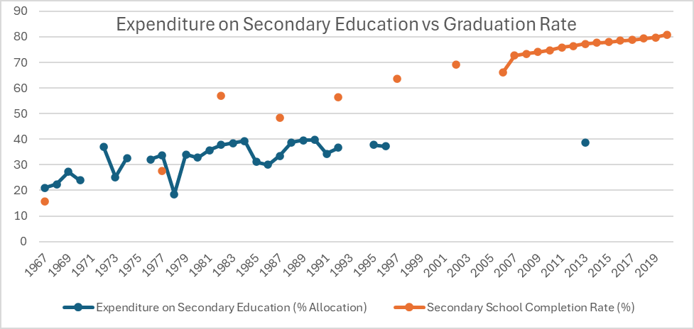
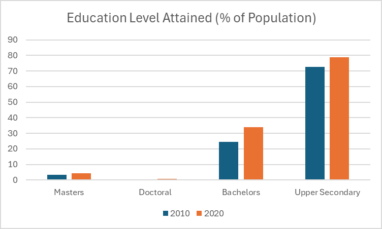
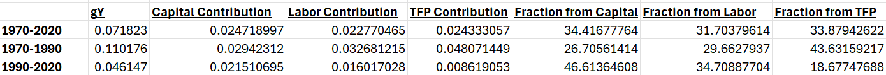

The Dissertation / Chapter II
Chapter II
Sharpening the Claws of Human Capital
“What fueled this? Investing in the minds of their mortals, of course! More clever minions mean more ingenious ways to gather treasure. Their upper secondary school completion rate soared from a miserable 15.66% in 1970 to a far more respectable 78.82% by 2020. A sound investment, I say, for any aspiring hoard-master.”
— the ancient peer reviewer, again unbidden

Government investment in education evolved dramatically. In 1970, approximately 67% of South Korea's education spending was allocated to primary schools, with 21% going to secondary education. By 2016, the distribution had shifted to 32% for primary, 38% for secondary, and over 20% for universities and colleges (up from roughly 8% in 1970). Overall, education funding grew to about 4.8% of GDP in recent years, compared to 3.5% in the 1970s. This sustained focus fostered higher graduation rates, a high-skilled workforce, and a technology-driven economy.

These educational advancements significantly influenced labor and human capital. The growth in effective labor — reflecting both population growth and improvements in human capital (ghL) — was 4.88% from 1970 to 1990. However, the specific measure of human capital growth (ghc) fell to 0.97% during 1990–2020, suggesting diminishing returns even as education levels continued to rise. Effective labor growth nearly halved to 2.39% in this later period, partly due to stagnating population growth.
Factors of production contributed roughly 65% of expansion from 1970–1990, rising to roughly 80% from 1990–2020. Technology growth (TFP) experienced the most dramatic decrease: it fell from 4.81% (43.63% of total expansion) in the high-growth phase to just 0.86% (18.68% of expansion) thereafter — leaving capital and labor as the dominant growth drivers of the modern era.
